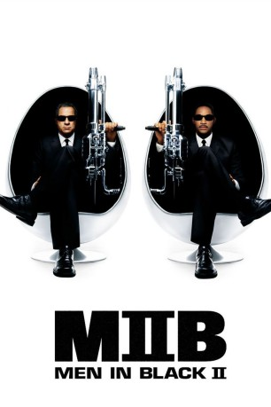
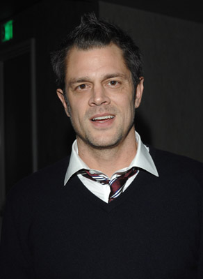
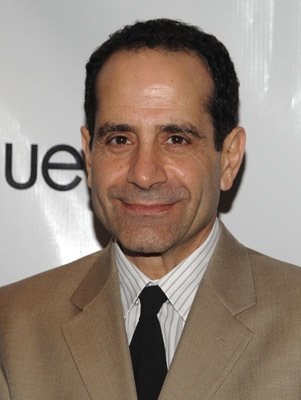
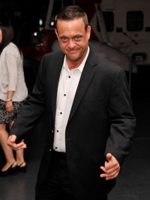
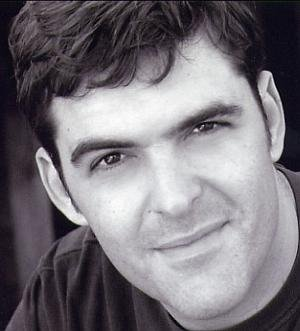
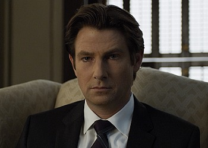
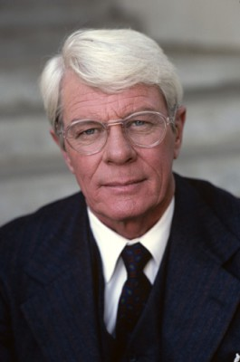
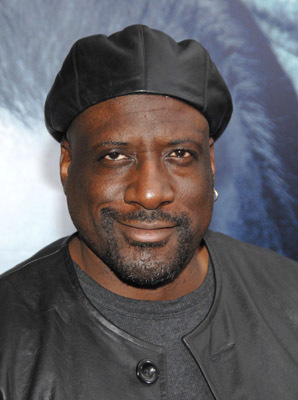
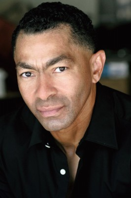

#280 Men in Black 2
Alternativ: Men in Black II
 gesehen am 09.03.2015
gesehen am 09.03.2015
 
 IMDB-Wertung: 6.1 / 10
IMDB-Wertung: 6.1 / 10  Metascore: 49
Metascore: 49 
Agent J muss die Erde wieder vor einigem Abschaum bewahren, denn in Gestalt des verführerischen Dessous-Models Serleena will ein Alien den Planeten unterjochen. Dabei benötigt J die Hilfe seines alten Partners Agent K. Der wurde aber bei seiner “Entlassung” geblitzdingst, und so muß J seine Erinnerung erst mal etwas auffrischen bevor es auf die Jagd gehen kann.
Jahr: 2002
Dauer: 88 Minuten
FSK: 12
Land: USA Studio: Columbia PicturesTonspuren: DD5.1 - ,
Untertitel: Deutsch, Englisch,
Auflösung: 1080p (1920×1040) Größe: 8632 MB
Genre: Action, Sci-Fi, Komödie, Abenteuer, Mystery
Regisseur:  Barry Sonnenfeld
Barry Sonnenfeld
Drehbuch: Lowell Cunningham, Robert Gordon, Robert Gordon, Barry Fanaro
Soundtrack: Danny Elfman
Darsteller:
 Tommy Lee Jones als Kay
Tommy Lee Jones als Kay Will Smith als Jay
Will Smith als Jay Rip Torn als Zed
Rip Torn als Zed- Lara Flynn Boyle als Serleena
-  Johnny Knoxville als Scrad / Charlie
- Rosario Dawson als Laura Vasquez
-  Tony Shalhoub als Jack Jeebs
- Patrick Warburton als Agent Tee
 Jack Kehler als Ben
Jack Kehler als Ben David Cross als Newton
David Cross als Newton- Michael Rivkin als Man with Harvey, the Dog
 Michael Bailey Smith als Creepy
Michael Bailey Smith als Creepy-  Lenny Venito als New York Guy
-  Jay Johnston als Younger Pizza Parlor MIB Agent
- Joel McKinnon Miller als Agent
-  Derek Cecil als Repairman Agent
- Peter Spruyt als MIB Customs Agent
- Kevin Cotteleer als MIB Customs Agent
 Marty Belafsky als MIB Customs Agent
Marty Belafsky als MIB Customs Agent- Rick Baker als MIB Passport Control Agent
- Martha Stewart als Herself
 Michael Jackson als Agent M
Michael Jackson als Agent M- Nick Cannon als MIB Autopsy Agent
- Jeremy Howard als Bird Guy Alien / Postal Sorting Alien
- Mary Stein als Bird Lady Alien
 Martin Klebba als Family Child Alien
Martin Klebba als Family Child Alien- John Alexander als Jarra / Family Dad Alien
- Ernie Grunwald als Young Postal Employee
- Chloe Sonnenfeld als Elizabeth, Young Girl at the Post Office
- John Andrew Berton Jr. als Split Alien Guy
 Doug Jones als Joey
Doug Jones als Joey- Biz Markie als Rapping Alien
-  Peter Graves als Himself
- Linda Kim als Ambassador Lauranna
- Paige Brooks als 'Mysteries in History' Lauranna
- Barry Sonnenfeld als Neuralyzed Father
-  Kevin Grevioux als Pineal Eye
 Derek Mears als Mosh Tendrils
Derek Mears als Mosh Tendrils- Sonny Tipton als Dog Poop
- Richard Pearson als Gordy
- Michael Beardsley als Suspicious Video Store Patron , uncredited
- Michael Buonomo als College Student , uncredited
 Ty Copeman als Car and Driver , uncredited
Ty Copeman als Car and Driver , uncredited- Patrick Coleman Duncan als 'History's Mysteries' Alien , uncredited
-  Darrell Foster als MIB Autopsy Agent , uncredited
- Ned Gorman als Cockroach on Sidewalk , uncredited
- Pete Macnamara als Man in Black , uncredited
- Dory Manzour als Subway Passenger , uncredited
- Matthew McGrory als Tall Alien , uncredited
- Nikki Milican Bedwell als Agent , uncredited
Datei: X:\4-Tetralogie(M-Z)\Men in Black\Men in Black 2 (2002, FSK12, 1920x1040).mkv seit 15.02.2015
Festplatte: HD Collection-3(N-Z)-6(A-Z)
 Es gibt insgesamt 8 Filme in der Gruppe '4-Tetralogie(M-Z)\Men in Black'
Es gibt insgesamt 8 Filme in der Gruppe '4-Tetralogie(M-Z)\Men in Black'